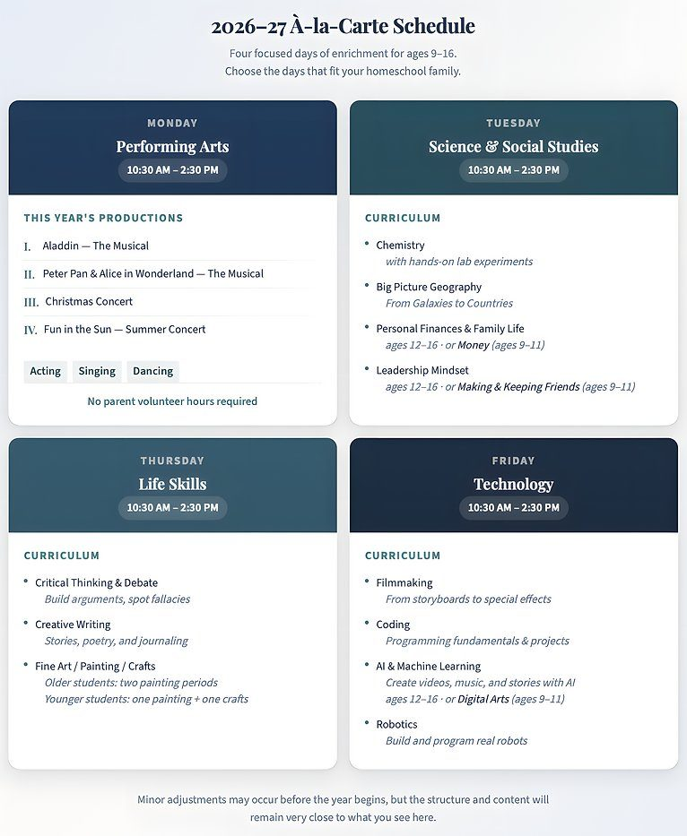
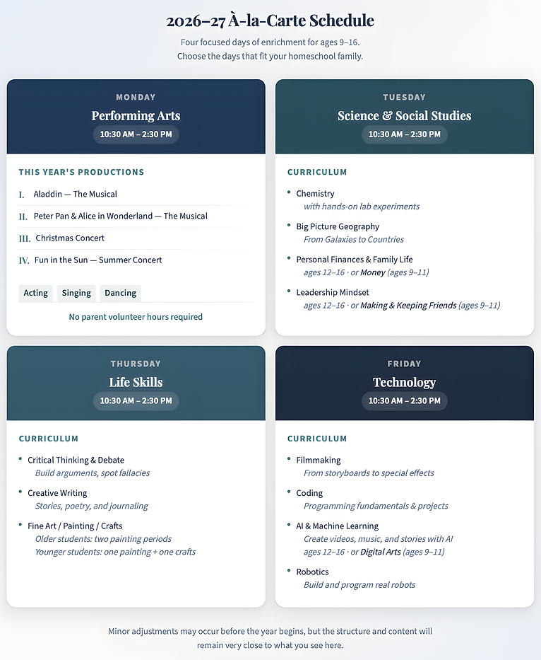
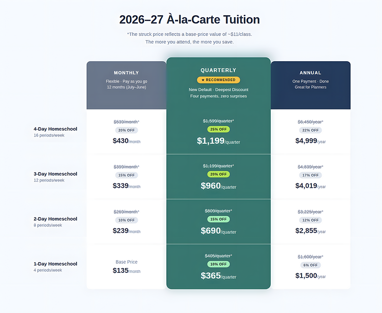

River Tech À La Carte
(Home School) 2026-27

River Tech offers flexible enrichment for homeschool families. Choose 1 to 4 days per week, and tuition scales accordingly. Our homeschool programs serve students ages 9–16, unless otherwise specified.
River Tech is a Christian school. All classes are taught with Christian commentary and a conservative moral framework. Our teaching team holds college degrees in their subject areas and brings real-world experience to every classroom.
Address: 927 E. Polston Ave. Post Falls, ID. 83854.
Fall Start: September 1st, 2026.
Weekly Homeschool Schedule 2026-27

Students are regularly invited to optional field trips, including hikes, farms, Silverwood, and other local outings.
À-la-Carte Tuition

Payment Plans
Tuition can be paid monthly, quarterly, or annually.
Quarterly is our standard plan and offers the best rate.
Monthly distributes tuition over twelve months (July–June).
Annual allows families to pay once at the start of the school year.
Homeschool Enrollment
Families may enroll in 1–4 days of enrichment. To enroll, complete the homeschool enrollment form and join River Tech's à-la-carte schedule. Students attending more days receive priority placement.
Volunteering to Lead/Teach a Class
If you have teaching experience and at least a bachelor's degree (or equivalent expertise), you can apply to volunteer to teach a subject. Volunteers are not paid a salary, but we do give priority to active volunteers during the scholarship review process. Families who are unable to volunteer are still welcome to apply for tuition assistance. Volunteering simply helps strengthen an application when funds are limited.
If you are interested in volunteering, please email learn@rivertech.me to inquire about volunteer and financial aid opportunities.
Who Thrives at River Tech?
Curious students ages 9+ who enjoy hands-on learning and want to combine academics with the arts and technology. Whether your child loves to perform, build, create, or explore ideas, they'll find their place here.
Field Trips
River Tech runs regular field trips. See photos and updates on Facebook.
Field trips are scheduled primarily on Wednesdays, outside regular school hours.
Families opt in and sign up using a form. With shared travel, most field trips are very affordable.
Explore Each Day
Monday: Performing Arts
Music, theater, voice, movement, and dance. Build confidence, communication, and character.
Learn MoreTuesday: Science & Social Studies
Hands-on science, geography, financial literacy, and social development.
Learn MoreThursday: Life Skills
Critical thinking, creative writing, character formation, and practical wisdom.
Learn MoreExplore River Tech
Why River Tech?
Discover what makes River Tech unique — our approach, values, and community.
Learn MoreRiver Tech School of Performing Arts & Technology in Post Falls, Idaho
Small classes. Personal attention. A teaching team that knows every student by name. River Tech is a private Christian school in Post Falls offering hands-on education in the arts, sciences, technology, and life skills. Parents and students consistently rate it the best choice for families who want more than a standard classroom experience.